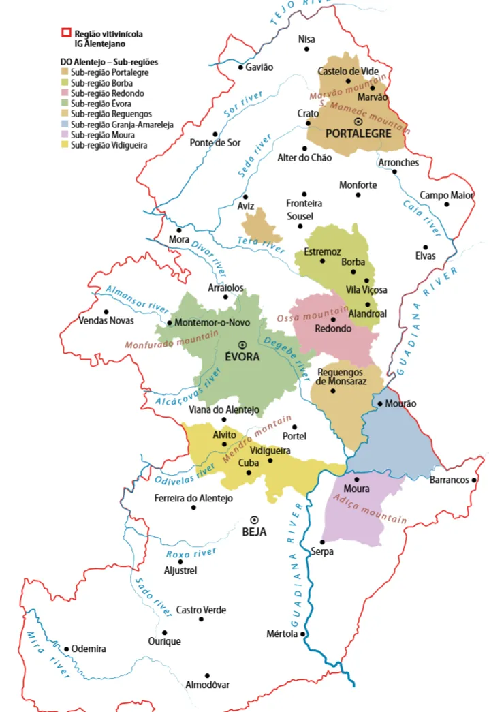
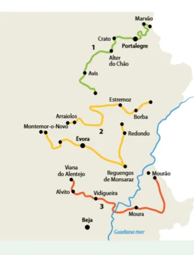
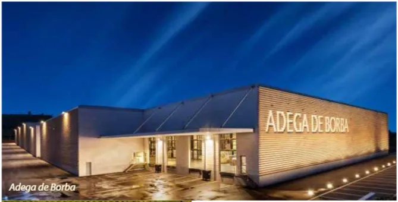
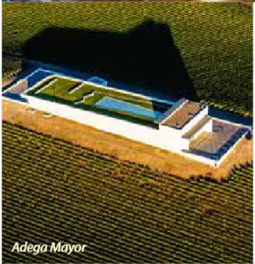
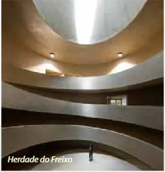
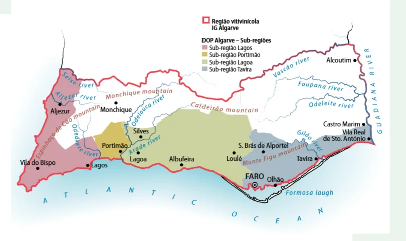

Chapter 4 · The Portuguese wine regions
Alentejo Wine Region
Key figures (2022)
Viticultural area: 25,924 ha
Total Production: 113,357,800 litres
Average yield: 4,370 litres/ha
Certified wine types: 54% DO
History
Vine cultivation was already common in pre-Roman times, and practiced by the Tartessians, Phoenicians and Greeks, evidence of whose presence is confirmed by the hundreds of amphorae catalogued at archaeological sites in the Alentejo, in southern Portugal. It was, however, the Romans who exploited the vineyards of the Alentejo on a grand scale, transporting their wines in boats on the Guadiana River. It is here that earthenware vessels of all shapes and sizes were discovered, some of which were capable of holding 2,000 litres of must, weighed close to a ton and measured almost two metres high. The region was overcome by the eighth-century Muslim invasion and the subsequent Islamification of the Iberian Peninsula. The different occupying tribes were tolerant to a greater or lesser degree of the local wine-producing activities. The least tolerant were the Almoravids and Almohads who uprooted vineyards or imposed high taxes on them. Vine cultivation deteriorated progressively and in some cases was abandoned completely. During the Reconquista, vine cultivation recovered and the monks re-established many vineyards. By the 16th century, vineyards flourished as never before in the Alentejo, giving rise to the distinguished and acclaimed wines of Évora, and other locations. The first subsequent crisis was caused by the War of Portuguese Independence. In the mid-17th century, the wines of the Alentejo had gained much acclaim and prestige in Portugal. During the time of the Methuen Treaty (between England and Portugal signed in 1703), the area of land under vine cultivation increased to over 100,000 hectares. Because of the peace concluded between France and England, however, and English merchants forgetting about the 1703 Methuen Treaty, a new crisis developed. Motivated by his own interests in the Douro, the Marquis of Pombal ordered the uprooting of vineyards in the Alentejo. Attempts were made in the middle of the 19th century to recover these vineyards. Amongst other measures taken was the founding in 1885 of the first cooperative wine cellar in Portugal in Viana do Alentejo. “The establishment of PROVA [Viticulture Project of the Alentejo]) in 1977 formed the technical basis required to implement quality certification in the Alentejo. This initiative was reinforced by the foundation of ATEVA – Associação Técnica dos Viticultores do Alentejo (Technical Association of Viticulturists of the Alentejo) in 1983, and by the formation of the CVRA – Comissão Vitivinícola Regional Alentejana (Alentejo Regional Vitivinicultural Commission) in 1989.
Terroir
Climate Köppen-Geiger classification:
C (temperate) and D (continental), Humid temperate climate with summer dry season. Cool nights and sub-humid: heliothermic index (HI): -1, MCC System indices (Tonietto & Carbonneau, 2004).
• Temperature: Seasonal (winter) frost important for dormancy and fruitiness, is apt to be later and less intensive. There is an increasing tendency towards very hot summers with the risk of unfavourable climatic phenomena such as heat waves (with vines suffering sunburn); there have been some years in certain regions where spring frost has occurred
• Water stress becomes problematic if annual precipitation falls below 200 mm and there is insufficient water in reservoirs. New viticultural zoning will be necessary in regions whose soils have low water retention and where irrigation capacity is inadequate.
• Light/Insolation: The extremely high insolation has a marked influence on the maturation of the grapes which risk developing excessively low acid and high sugar values
• Relative humidity (RH): The elevated dryness in regions in the interior permits organic wine production. Some changes have occurred since the construction of the Alqueva Dam. Geology
• Elevation. The most important typographic features of the Alentejan landscape are the Portel (421 m), Ossa (649 m) and the São Mamede (1,025 m) mountain ranges. The region’s meridional position and the absence of important relief features are what give the climate its Mediterranean and continental characteristics. Vineyard elevation varies from sea level to 500 m.
• Soil science. For the most part, the vineyards are found in plutonic rock substratum(granites, tonalites, syenites and nepheline syenites, yet the diversity of pedological spots on which vineyards are established (including schist and clay limestone spots) should be emphasized the layer covering the lithosphere, which interacts with the atmosphere, the hydrosphere and the biosphere.
Botany (biodiversity features) and authorised varieties
Red & Rosé wines: Alfrocheiro (Tinta Bastardinha), Alicante Bouschet, Aragones (Tinta Roriz, Tempranillo), Baga, Cabernet-Sauvignon, Caladoc, Carignan, Carmenère, Castelão (Periquita), Cinsault, Corropio, Dunf (Petite Syrah), Grand Noir, Grenache, Manteúdo Preto, Merlot, Moreto, Nero d’Avola, Petit Verdot, Pinot Noir,

Itinerary 1 Itinerary 2
Sangiovese, Syrah (Shiraz), Tannat,
Itinerary 3
Tinta Barroca, Tinta Caiada (Pau Ferro, Tinta Lameira), Tinta Carvalha, Tinta Grossa (Carrega Tinto), Tinta Lisboa Miúda, Tinto Cão, Touriga Franca,
Açores Portugal continental
Touriga Nacional, Trincadeira (Tinta
Graciosa
Amarela, Trincadeira Preta), Zinfandel,
Pico
Gewürztraminer and Pinot Gris.
Terceira
White wines: Alicante-Branco, Alvarinho, Antão-Vaz, Arinto Madeira
Porto Santo
(Pedernã), Bical (Borrado das Moscas),
Madeira
Chardonnay, Chasselas, Diagalves, Encruzado, Fernão Pires (Maria Gomes), Gouveio, Larião, Malvasia Fina, Malvasia Rei, Manteúdo, Marsanne, Moscatel Graúdo, Mourisco Branco, Perrum, Petit Manseng, Rabo de Ovelha, Riesling, Roussanne, Sauvignon (Sauvignon Blanc), Semillon, Sercial (Esgana Cão), Síria (Roupeiro, Códega), Tália (Ugni Blanc, Trebbiano Toscano), Tamarez (Molinha), Trincadeira das Pratas, Verdelho, Vermentino, Viognier and Viosinho.
Types of wine produced
IG Alentejano wine or Alentejo
Regional Wine: Red, white, rosé, sparkling. – IG Alentejano, or Vinho Regional Alentejo (Alentejo Regional Wine): Red, white, rosé, liqueur, sparkling, Aguardente Bagaceira (grape marc spirit), Aguardente Vínica (brandy from wine spirit). – Vinhos DO Alentejo (+ subregions): Portalegre, Borba, Redondo, Reguengos, Vidigueira, Évora, Granja-
Amareleja and Moura: Red, white, rosé, liqueur, sparkling. – Vinhos Espumantes DO Alentejo – Vinhos Licorosos DO Alentejo – Aguardente Bagaceira DO Alentejo (grape marc spirit) – Aguardente Vínica DO Alentejo (brandy from wine spirit).

Regional contacts
Technical information: Comissão Vitivinícola Regional Alentejana (Alentejo Regional Vitivinicultural Commission) - Horta das Figueiras, Rua Fernando Seno, 14, 7002-506 ÉVORA; Tel.: 266 748 870. Cultural information on the wine
of the region: Confraria dos Enófilos do Alentejo (Confraternity of Oenophilists of the Alentejo), Website: www. vinhosdoalentejo.pt; Reguengos de Monsaraz Vine and Wine Museum;
Website: www.cm reguengos monsaraz. pt; Redondo Regional Wine Museum;
Website: www.cm redondo.pt Institutions of higher learning
and viticultural research: University of Évora, Largo dos Colegiais, 2; Tel.: 259 350 000,
Website: www.uevora.pt; Instituto Politécnico de Beja - Escola Superior Agrária – ESA (School of Agriculture of the Polytechnic Institute of Beja), Rua Pedro Soares, Apartado 6158; 7801-908 BEJA;
Website: www.esab.ipbeja.pt
Certifying authority: Comissão Vitivinícola Regional Alentejana (Alentejo Regional Vitivinicultural Commission) 7002-506 ÉVORA, Horta das Figueiras - Rua Fernanda Seno, n.º 14 - Apartado 498, Tel.: 266 748 870, Fax: 266 748 879 -
Website: www.vinhosdoalentejo.pt, e-mail: cvralentejo@vinhosdoalentejo.pt
Enotourism information: Rota dos Vinhos do Alentejo, Rua 5 de Outubro nº 88, 7000-854 ÉVORA; Tel.: 266 746 498,
Website: rota@vinhosdoalentejo.pt
Prestigious wineries
in the region:
Although the Alentejo wine region has managed to quadruple the area under cultivated vine in only four decades and to achieve a dominant share of the national still wines market, (over 40% of DO and IGP wines), the wellestablished, homogenous regional network is of limited political and international importance compared to the Douro. Most Portuguese wine companies that do business on the international stage have invested in brands as well as wine estates in the Alentejo.Meanwhile the biggest regional estate invested in other regions.
Herdade do Esporão, with vineyards covering a total of 700 ha, is the largest owner of organic vineyards in Portugal, and a proponent of scientific innovation in sustainability and wine tourism. The Fundação Eugénio de Almeida The has more than 600 hectares under vineyard cultivation and is committed to organic viticulture. The winery – Adega da Cartuxa – on the Herdade de Pinheiros estate, receives all the grapes harvested from the Fundação’s vineyards and boasts advanced technological facilities. CARMIM – Cooperativa Agrícola de



Reguengos de Monsaraz was formed in 1971 by a group of 60 winegrowers. It is currently the largest cooperative in the Alentejo, with around 800 members who collectively own more than 3,000 hectares of vineyards. The Adega Cooperativa De Borba,
CRL was founded in 1955. Today it represents 250 winegrowers with 2,260 ha of vineyards and produces 11 million litres of wine. • Adega Cooperativa de Redondo • Adega Cooperativa de Vidigueira, Cuba e Alvito • João Portugal Ramos
• SOVIBOR - Sociedade de Vinhos de Borba S.A. • Monte da Ravasqueira • Paulo Laureano
• Casa Relvas – largest producers in Portugal of wine certified sustainable. • Herdade Cortes de Cima • Herdade do Mouchão • Herdade das Servas • Quinta da Plansel (grapevine improvement) • Sociedade Agrícola da Herdade das Mouras de Arraiolos, S.A. Innovative architecture in the Alentejo: Adega Maior Cooperativa de Borba Herdade do Freixo
Adega do Moinho Branco,
Ribafreixo Wines, Vidigueira.
